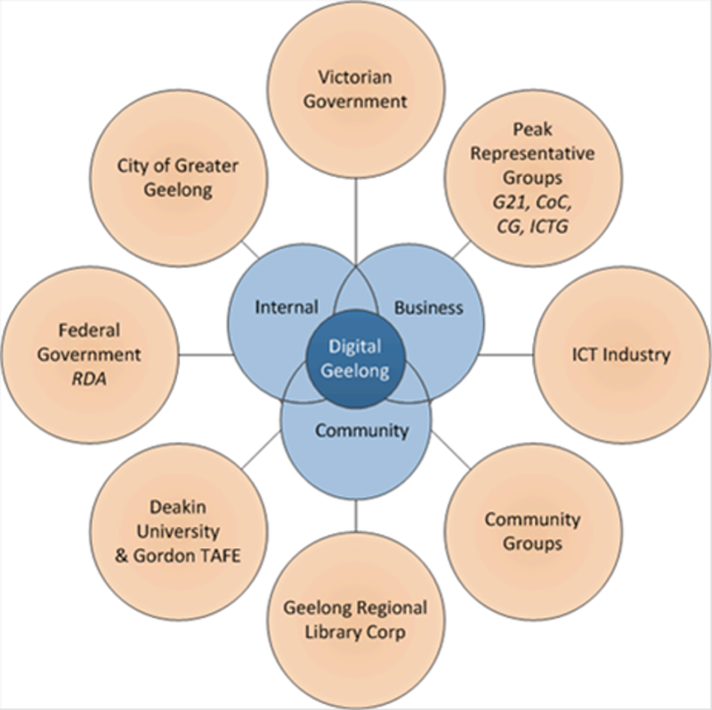
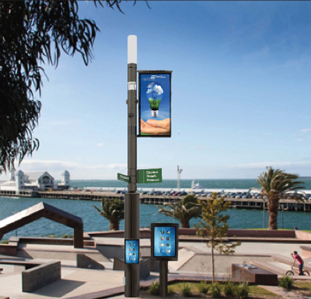

Your browser doesn't support the features required by impress.js, so you are presented with a simplified version of this presentation.
For the best experience please use the latest Chrome, Safari or Firefox browser.
From data hacks to smart cities:
Nurturing a clever, creative community
Matthew Szymczak
Acting Manager Digital, Information and Technology
City of Greater Geelong
Kathy Reid
Director of Developer Relations at Mycroft AI
President, Linux Australia
bit.ly/Transformers-Geelong
#CleverCreative
The Geelong Method:
A maturity model for civic open data
- Level 1: ad hoc - lack of data
- Level 2: repeatable - hack the data
- Level 3: defined - track the data
- Level 4: managed - the knack of data
- Level 5: optimized - data backbone
Level 1 - lack of data
- what data is available? - some already available
but not machine-readable
- where is the data stored? which format?
- what are the privacy considerations?
- garnering support and educating stakeholders
Decisions driven by the
Digital Geelong Strategy

Key decision:
use data.gov.au
as open data platform
Level 2 - hack the data
- GovHack - open data hackathon
- Code for Australia Open Data Fellowship
- Risks and challenges - open data in the headlines
Key learning:
It's difficult to attract participants - hackers, hustlers and hipsters -
to regional events
Key learning:
You need a way to
mature prototypes into products
that are ready for deployment
Key learning:
You need to have a
risk appetite to ride out
the negative impacts
of open data
Level 3 - track the data
- Geelong open data portal
- Targeted growth over data sets -
over 160 data sets now available
- Clever and Creative 30-year strategy -
providing context and a backdrop
"By 2047, Greater Geelong will be internationally recognised as a clever and creative city-region that is forward looking, enterprising and adaptive, and cares for its people and environment."
Level 4 - the knack of data
- Open data as a platform for civic and urban change
- differentiated services
- Publicly generated data becomes
an input into the platform
- Towards a Smart City
Smart
Bollard
Trial

Level 5 - a data backbone
- Open data as fuel for Smart City platforms
- Open data as an influencer and input into policy decisions - a continual data lifecycle
- A Green Spine and a Data Backbone - the City as data
thank you